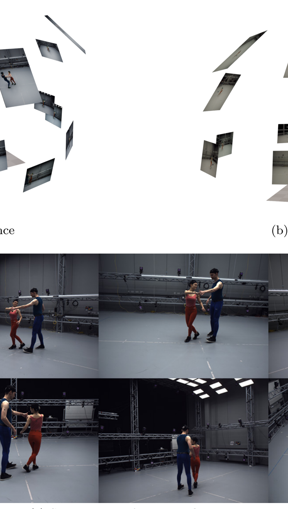
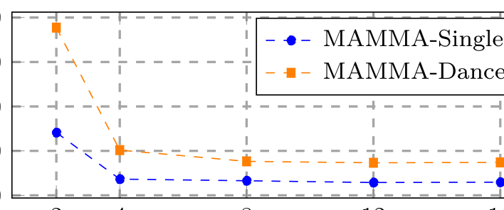
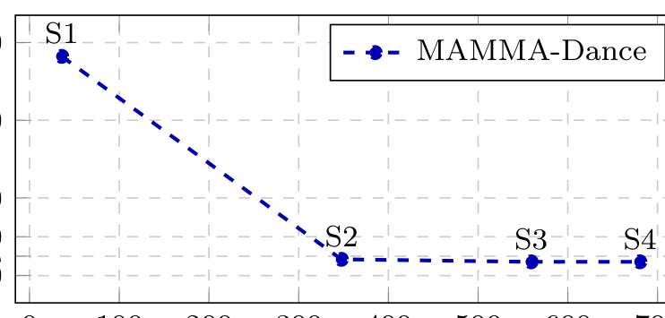
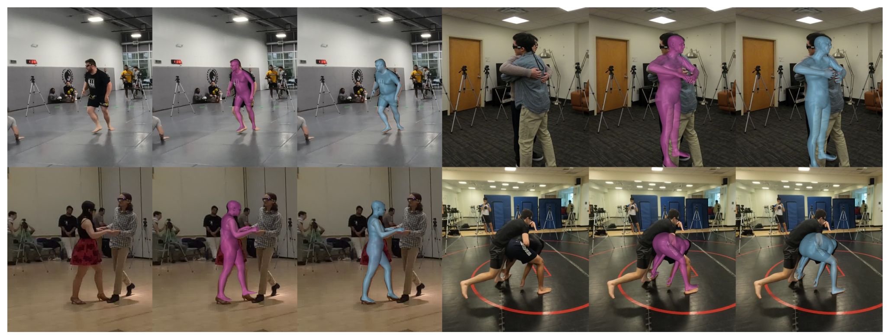
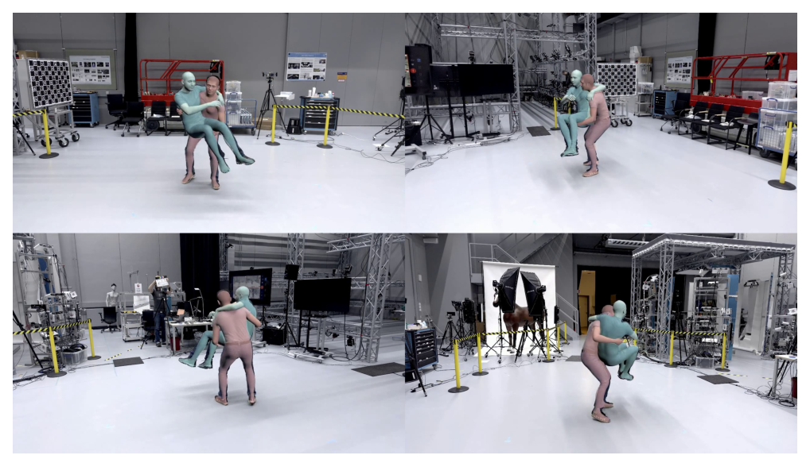
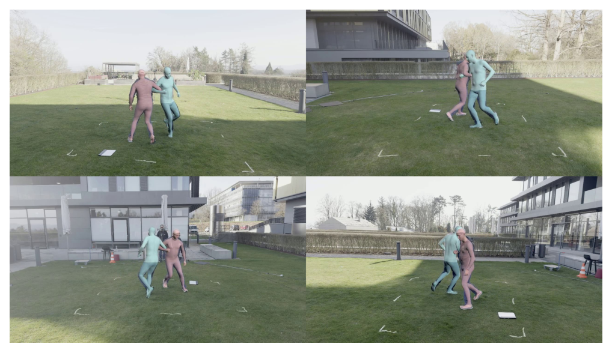
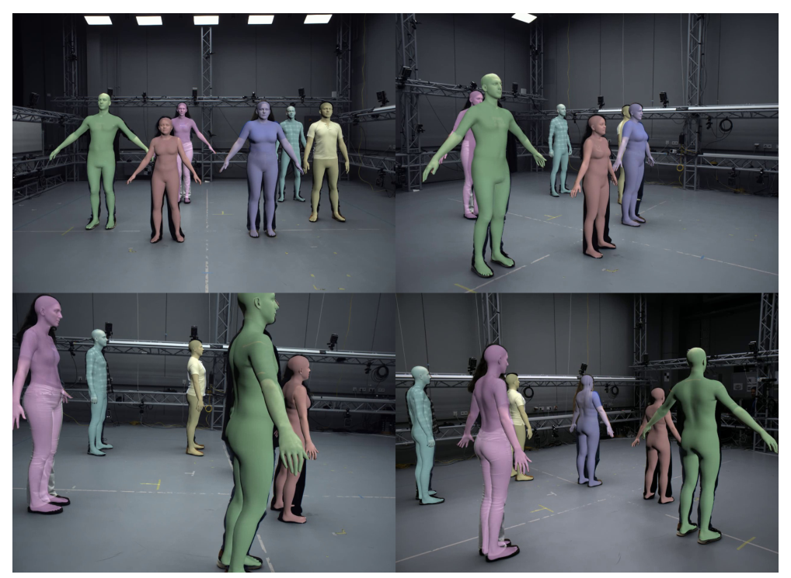

MAMMA: why 512 dense surface landmarks are the bridge from video to accurate multi-person SMPL-X motion
The short version. Markerless motion capture, or markerless mocap, means recovering human motion from cameras without attaching physical markers to the body; MAMMA does this for close multi-person interaction from synchronized, calibrated multi-view video. Its output is SMPL-X, a parametric body model that represents the body, hands, and face as a posed 3D mesh. The central move is to replace sparse 2D joints with 512 dense surface landmarks, where each landmark is a known SMPL-X surface point projected into each image. MammaNet, the landmark detector, uses a Vision Transformer (ViT) image encoder, a mask convolutional neural network (CNN), and a transformer decoder with one learnable query, meaning one learned request vector, for each landmark. For every landmark it predicts 2D position, uncertainty, visibility, and contact: uncertainty says how reliable the pixel location is, visibility says whether the point is seen, and contact says whether the corresponding body surface touches another person or the floor. Cross-view association, the step that decides which person in one camera is the same person in another camera, uses SAM2 masks from Segment Anything Model 2 and symmetric epipolar distance, a camera-geometry distance between a point in one view and its corresponding epipolar line in the other view. Training is synthetic only: MammaSyn extends BEDLAM, a synthetic human motion dataset, to a 32-camera virtual setup, then renders 955k images and 2.5M person crops with interaction, hands, visibility, and contact labels. MPJPE, mean per-joint position error in millimeters where lower is better, is 12.44 mm for MAMMA-C (the contact-aware variant) on Hi4D 19 SMPL joints, compared with 32.10 mm for AvatarPose; against Vicon, a commercial optical marker system, plus MoSh++, a method that fits SMPL-X to marker trajectories, MAMMA is 22.481 mm versus 21.619 mm on held-out markers, a 0.862 mm gap, while the reported capture-to-SMPL-X pipeline time drops from about 72 hours to about 26 hours on one GTX-4090 GPU.

1. Motivation: the marker problem is not only hardware
Vicon-style marker-based mocap is accurate, but the cost is not just the camera rig. Reflective markers have to be placed, calibrated, tracked, relabeled, and cleaned when they fall off, disappear under occlusion, or swap identities. The paper stresses that close human interaction makes this worse because hands, arms, and torsos hide each other exactly when the motion is most interesting.
Markerless methods promise to remove that cleanup step, but many academic systems stop at sparse 2D keypoints. Sparse keypoints are enough to draw a skeleton. They are not enough to explain which surface patch is visible, whether two bodies touch, or how a hand should fit when it is partly hidden. MAMMA's bet is that the supervision signal has to become denser before the fitting problem can become simpler.
Q: why not triangulate ordinary 2D joints from many cameras and then fit a body model?
Guide: think about a hug or a dance hold. The hard evidence is not only where the elbow is. It is also which arm surface is visible, which hand belongs to which person, and where contact should prevent interpenetration.
A: Sparse joints compress away too much. A 2D elbow point says little about the surface orientation or the hand shape near it. A dense surface landmark says, "this exact SMPL-X vertex should project here, with this reliability, visibility, and contact probability." That gives the optimizer enough constraints to solve pose and shape directly from reprojection.
Takeaway: The paper's main design choice is not just "more points"; it is more points whose identities are tied to a parametric surface.
2. Contribution: what is new, and what is not
The paper's contributions are concrete. First, it introduces MammaSyn, a synthetic multi-view training set with SMPL-X ground truth, dense landmark locations, per-vertex visibility, and contact labels. Second, it introduces MammaNet, a dense landmark network that predicts one output bundle per surface landmark rather than one sparse skeleton. Third, it uses SAM2 mask conditioning and symmetric epipolar distance for cross-view person association. Fourth, it fits SMPL-X by minimizing multi-view reprojection error over dense landmarks, with uncertainty, visibility, temporal smoothness, shape regularization, and contact terms.
The paper also makes a strong but bounded accuracy claim. On the academic benchmarks, MAMMA or MAMMA-C is best among the academic baselines in the reported 3D fitting tables. In the direct Vicon+MoSh++ comparison, it is not better than the marker-based reference: MAMMA has 22.481 mm held-out marker error and MoSh++ has 21.619 mm. The relevant claim is that the gap is 0.862 mm in that setup, not that markerless tracking beats Vicon.
The paper names its reimplementation of Hewitt et al. as Look-Ma* because the original code was not public. The Hi4D table also prints MVPose*; the PDF table does not define that mark, so this page preserves it without adding an interpretation.
3. Datasets: synthetic supervision, real evaluation
MammaSyn is the training data. The authors extend the BEDLAM synthetic human pipeline to a 32-camera virtual capture setup, add interaction motions, add hand motion sources, and render 955k images. The paper reports 2.5M samples, meaning person crops. The supplement adds a detail that matters for reading the camera count: each rendered sequence uses 8 views selected from the 32-camera setup by Farthest Point Sampling (FPS), which chooses views to maximize coverage.


| Subset | # minutes | Dataset | % of images |
|---|---|---|---|
| MammaSyn-S | 86 | BEDLAM | 9.9 |
| MammaSyn-S | 86 | MOYO | 15.9 |
| MammaSyn-I | 211 | Harmony4D | 17.7 |
| MammaSyn-I | 211 | Hi4D | 8.0 |
| MammaSyn-I | 211 | Inter-X | 14.6 |
| MammaSyn-I | 211 | InteractionsCouple (ours) | 19.4 |
| MammaSyn-I | 211 | LatinDance (ours) | 3.4 |
| MammaSyn-H | 36 | InterHand2.6M | 10.0 |
| MammaSyn-H | 36 | SignAvatars | 1.0 |
The real evaluation data is separate. MammaEval-Singles uses 16 RGB views and contains 3 people across 22 single-subject sequences. MammaEval-Dance uses 32 views and contains 18 West Coast Swing sequences from a professional dance couple. MammaEval-Extra uses 32 views and adds 37 held-out markers per subject so that markerless SMPL-X fits can be compared against Vicon+MoSh++ without using those markers for fitting.
{kind=link}

4. Pipeline: masks, landmarks, identities, fitting
The operational pipeline has four steps. First, SAM2 propagates an instance mask for each person through each video. Second, MammaNet predicts 512 landmark bundles for each masked person in each view. Third, cross-view association uses the landmark geometry to link the same person across cameras. Fourth, reprojection fitting estimates SMPL-X shape, pose, and translation for every frame.

The mask is a conditioning signal, not the final answer. The paper notes that SAM2 masks can miss body parts when people are very close. Dense landmarks and multi-view geometry then supply a second line of evidence, especially for identity matching across views.
5. Method: the equations explain why dense landmarks matter
For person association, MAMMA compares dense landmark tracks between two views. If a landmark is visible in both views, its point in one camera should lie near the epipolar line induced by its point in the other camera. The symmetric epipolar distance checks both directions:
Here $x_a$ and $x_b$ are two landmark sets from two camera views, $F$ is the number of frames, $N=512$ is the number of landmarks, $F_{ba}$ and $F_{ab}$ are the fundamental matrices between the views, and $d(x,l)$ is point-to-line distance in pixels. The paper then converts the distance into geometric affinity with $A_g(x_a,x_b)=\exp(-D_g/\lambda)$, where $\lambda$ is a temperature. If too few landmarks are mutually visible, or if $D_g\gt\tau_g$ for a threshold $\tau_g$, the affinity is set to zero before Hungarian assignment links detections across views.
For SMPL-X fitting, the core term is a multi-view reprojection loss. A predicted landmark should match the projection of its corresponding SMPL-X vertex:
Here $C$ is the number of cameras, $t$ indexes time, $c$ indexes camera, and $l$ indexes landmark. The predicted 2D landmark is $\mu_{t,c,l}$, its uncertainty is $\sigma_{t,c,l}$, its visibility probability is $p_{t,c,l}$, $V_{t,l}$ is the corresponding SMPL-X vertex, $Q_c$ is the camera calibration, $\Pi$ is projection into the image, and $\rho$ is the robust Geman-McClure penalty. Visibility gates the term, and uncertainty scales it, so occluded or unreliable landmarks do not dominate the fit.
The parameters $\Phi$ are SMPL-X shape $\beta$, pose $\theta$, and translation $t$; $Q$ is the camera calibration; and $L$ denotes the predicted landmarks, uncertainty, visibility, and contact probabilities. The paper says the fitting does not rely on pose priors or pose initialization, and it does not initialize pose and shape with a learned regression method. The precise version is important: the bodies are globally initialized at the 3D point that best minimizes camera-ray distance, and the optimization still uses an L2 shape regularizer, temporal acceleration penalty, and contact terms.

6. Training: synthetic only, then tested on real video
MammaNet, CameraHMR, and Look-Ma* are trained for 300k iterations on 4 NVIDIA A100 GPUs. The per-GPU batch size is 24, gradient accumulation is 2 steps, the optimizer is Adam, warm-up is 500 iterations, and the reported training time is about 3 days. MammaNet and CameraHMR initialize their transformer backbones from ViTPose-B weights; Look-Ma* uses HRNet-W48 initialized from COCO pose weights. This is the one place to keep the synthetic-versus-real distinction straight: training uses synthetic crops, while RICH, MOYO, Harmony4D, CHI3D, Hi4D, and the MammaEval sets are used for evaluation.
| Training data | RICH | Harmony4D | CHI3D | MammaEval-S | MammaEval-D | MOYO |
|---|---|---|---|---|---|---|
| BEDLAM | 8.83 | 18.33 | 4.36 | 6.16 | 7.70 | 11.04 |
| BEDLAM* | 9.35 | 19.11 | 4.40 | 6.49 | 7.60 | 11.92 |
| MammaSyn | 8.68 | 19.09 | 4.74 | 6.53 | 7.71 | 7.05 |
| MammaSyn +B | 8.09 | 17.34 | 4.09 | 5.62 | 6.66 | 6.95 |
The ablation matters because MammaSyn alone is not uniformly better than BEDLAM. It is much better on MOYO, but worse on Harmony4D, CHI3D, MammaEval-S, and MammaEval-D. The best row is the combined setting, MammaSyn +B, which means the new data is additive rather than a clean replacement.
7. Experiments: read the tables by metric and setup
All millimeter errors below are lower-is-better. MPJPE is mean per-joint position error. PVE is per-vertex error, the average distance between corresponding mesh vertices. For the dense-landmark tables, the metric is mean 2D Euclidean distance in pixels.
2D dense landmark prediction
| Model | RICH | MOYO | MammaEval-S |
|---|---|---|---|
| Look-Ma* | 13.26 | 22.43 | 10.25 |
| CameraHMR | 8.84 | 12.53 | 6.32 |
| MammaNet (ours) | 8.55 | 11.40 | 6.09 |
| MammaNet + masks SAM2 (ours) | 8.83 | 11.04 | 6.16 |
Single-person masks do not dominate. The masked MammaNet row wins MOYO, but unmasked MammaNet is lower on RICH and MammaEval-S. That is why the paper frames masks mainly as an interaction disambiguation tool.
| Model | Harmony4D | CHI3D | MammaEval-D |
|---|---|---|---|
| Look-Ma* | 31.45 | 8.77 | 15.01 |
| CameraHMR | 32.84 | 6.30 | 10.21 |
| MammaNet (ours) | 31.96 | 6.22 | 9.87 |
| MammaNet + masks SAM2 (ours) | 18.33 | 4.36 | 7.70 |
The two-person table is the clean mask result. On Harmony4D, mask conditioning moves MammaNet from 31.96 px to 18.33 px. On CHI3D it moves 6.22 px to 4.36 px. On MammaEval-D it moves 9.87 px to 7.70 px.

3D SMPL-X fitting
| Model | RICH | Harmony4D | CHI3D | MammaEval-S | MammaEval-D | MOYO | ||||||
|---|---|---|---|---|---|---|---|---|---|---|---|---|
| MPJPE | PVE | MPJPE | PVE | MPJPE | PVE | MPJPE | PVE | MPJPE | PVE | MPJPE | PVE | |
| SMPLfiy | 96.18 | 71.42 | - | - | 67.68 | 51.79 | 47.15 | 35.42 | 53.92 | 43.08 | 62.15 | 44.68 |
| Look-Ma* | 39.52 | 30.29 | 59.37 | 45.6 | 46.47 | 39.36 | 25.97 | 23.94 | 27.98 | 24.89 | 60.15 | 53.82 |
| CameraHMR | 25.61 | 21.36 | 58.59 | 42.0 | 40.8 | 34.61 | 15.25 | 18.43 | 20.41 | 21.06 | 33.75 | 33.74 |
| MAMMA | 22.20 | 19.76 | 45.26 | 34.02 | 38.01 | 32.84 | 12.96 | 17.18 | 17.71 | 19.80 | 22.95 | 25.48 |
| MAMMA-C | 22.20 | 19.76 | 45.35 | 34.05 | 37.96 | 32.82 | 12.96 | 17.18 | 17.73 | 19.78 | 22.95 | 25.48 |
This table is where overclaiming would be easy. MAMMA or MAMMA-C is best against the listed academic baselines on every benchmark column where a comparison exists. But the contact stage is not uniformly better than the no-contact row: MAMMA is slightly lower on Harmony4D and on MammaEval-D MPJPE, while MAMMA-C is slightly lower on CHI3D and MammaEval-D PVE. These are sub-millimeter or near-sub-millimeter differences — MAMMA and MAMMA-C are in fact identical to two decimals on RICH, MammaEval-S, and MOYO — so the safer reading is that contact mainly helps the penetration metric below rather than every MPJPE/PVE cell. By the same token, the headline Hi4D gain (12.44 vs 32.10 mm) is driven by the dense-landmark fit, not the contact term.
| Model | M.P. Depth (mm) | M.P. Verts. |
|---|---|---|
| Look-Ma* | 13.73 | 990.61 |
| CameraHMR | 13.41 | 678.10 |
| Ground truth | 9.84 | 479.94 |
| MAMMA (ours) | 10.50 | 456.05 |
| MAMMA-C (ours) | 8.46 | 378.02 |
Here MAMMA-C is clearly the contact winner. It reduces penetration depth to 8.46 mm and penetrating vertices to 378.02. The paper also warns that the ground-truth bodies themselves contain some interpenetration, so this table should be read as a physical-plausibility check, not as proof that the fitted body is more accurate than the reference in every sense.

Hi4D and Vicon comparisons
| Method | MPJPE (mm) |
|---|---|
| MvP | 92.77 |
| Graph | 89.62 |
| Faster VoxelPose | 68.40 |
| MVPose* | 53.05 |
| MVPose | 42.63 |
| 4DAssociation | 41.29 |
| AvatarPose | 32.10 |
| MAMMA-C (ours) | 12.44 |
The Hi4D comparison is the largest clean headline gap: 12.44 mm for MAMMA-C versus 32.10 mm for AvatarPose. The setup is 19 SMPL joints; the paper says the network was retrained with Hi4D sequences removed, and the SMPL-X mesh was converted to SMPL for this benchmark.
| Subject | Action | MoSh++ | MAMMA |
|---|---|---|---|
| 00202 | solo dancing | 24.368 | 25.464 |
| 00202 | calib routine | 20.081 | 21.259 |
| 00202 | walking | 23.384 | 25.841 |
| 00202 | warmup | 21.888 | 24.108 |
| 00219 | solo dancing | 23.967 | 22.889 |
| 00219 | calib routine | 23.338 | 22.670 |
| 00219 | walking | 23.507 | 24.503 |
| 00219 | warmup | 23.898 | 21.864 |
| 00236 | solo dancing | 19.864 | 21.876 |
| 00236 | calib routine | 17.832 | 19.050 |
| 00236 | walking | 18.791 | 21.002 |
| 00236 | warmup | 18.514 | 19.248 |
| Mean | - | 21.619 | 22.481 |
MoSh++ wins the mean marker error by 0.862 mm. The paper's stronger practical claim is time: technicians cleaned 29,244 frames from 9 two-person West Coast Swing sequences, totaling 24 minutes and 31 seconds of capture, and marker cleaning took 46 hours and 51 minutes. Running MoSh++ after cleaning took about 25 hours, making the capture-to-SMPL-X pipeline about 72 hours. MAMMA is reported at about 26 hours on one GTX-4090, with SAM2 at 2 fps, MammaNet at 12 fps, and optimization averaging 65 seconds per 100-frame sequence.
8. Ablations: the method wins by combining cues
The correspondence ablation in the supplement is simple and important. On the evaluation datasets, the cross-view matching success rate is 100%. Harmony4D and MammaEval-D have around 20 cameras, CHI3D has 4, and a MammaEval-D camera-reduction test still matches people correctly 100% of the time even with 2 cameras. The paper also notes that single-frame matching can fail under heavy occlusion or bad masks, so the 100% number belongs to the evaluated video setting with temporal SAM2 information.
{kind=link}

{kind=link}

| Sequence | Harmony4D | Ours w/ mask |
|---|---|---|
| 002 hugging | 75.72 | 77.96 |
| 025 grappling2 | 66.26 | 71.94 |
| 028 grappling2 | 72.26 | 78.34 |
| 030 grappling2 | 70.26 | 77.18 |
| 031 grappling2 | 74.35 | 80.44 |
| 032 grappling2 | 54.79 | 60.29 |
| 033 grappling2 | 68.47 | 74.95 |
| 034 grappling2 | 64.16 | 71.48 |
| 035 grappling2 | 69.42 | 76.16 |
| 036 grappling2 | 67.82 | 74.00 |
| 037 grappling2 | 65.71 | 72.25 |
| 038 grappling2 | 71.93 | 78.71 |
| 039 grappling2 | 66.44 | 72.78 |
| 040 grappling2 | 73.41 | 78.62 |
| 041 grappling2 | 71.59 | 77.72 |
| 042 grappling2 | 71.62 | 77.47 |
| 043 grappling2 | 71.94 | 78.61 |
| 009 sword2 | 68.25 | 69.19 |
| 010 sword2 | 65.16 | 66.03 |
| 001 sword3 | 70.70 | 70.36 |
| 002 sword3 | 71.38 | 72.52 |
| 003 sword3 | 71.57 | 72.52 |
| 004 sword3 | 71.39 | 72.02 |
| 005 sword3 | 71.84 | 72.30 |
| 006 sword3 | 70.71 | 71.41 |
| 007 ballroom2 | 67.72 | 72.11 |
| 008 ballroom2 | 69.51 | 73.29 |
| 009 ballroom2 | 69.52 | 72.84 |
| 010 ballroom2 | 69.41 | 73.11 |
| 016 mma4 | 65.36 | 76.18 |
| 001 mma5 | 70.69 | 74.86 |
| 002 mma5 | 72.19 | 77.27 |
| 003 mma5 | 71.19 | 75.85 |
| 004 mma5 | 71.86 | 76.57 |
| 005 mma5 | 71.79 | 76.77 |
| 009 mma5 | 71.40 | 75.69 |
| 011 mma5 | 71.40 | 76.07 |
| 013 mma5 | 72.11 | 76.09 |
| 016 mma5 | 71.02 | 74.95 |
| mIoU | 69.80 | 74.28 |
The Harmony4D silhouette comparison is mostly positive but not perfect. MAMMA is higher on mIoU, 74.28 versus 69.80, and higher on all listed sequences except 001 sword3, where Harmony4D is 70.70 and MAMMA is 70.36. That 0.34 IoU-point gap is small enough to treat as within the noise rather than a meaningful failure mode.
{kind=link}

9. Limitations: what the system still needs
| Boundary | What the paper says | How to read it |
|---|---|---|
| Calibrated multi-view setup | The method assumes camera calibration and synchronized views; the real capture rigs use 16 or 32 IOI views, and the iPhone demo still uses synchronized devices plus calibration. | This is markerless body capture, not uncalibrated monocular capture. |
| SMPL-X output | The output is SMPL-X pose, shape, and translation. | The system is accurate for this parametric mesh representation; it is not a direct cloth, hair, or non-SMPL body reconstruction system. |
| SAM2 dependence | SAM2 masks can miss body parts when people are close. | Bad segmentation can hurt landmark predictions and identity consistency, especially in heavy occlusion. |
| Contact probabilities | The contact predictor is conservative, with highest probabilities around 60%. | Contact helps reduce penetration, but it is not a hard physical simulator. |
| Floor contact | Foot landmarks can follow shoe height, and strong floor-contact penalties can pull the body downward incorrectly. | The authors recommend floor contact mainly for single-view cases or post-processing near the floor. |
| Hands | Hand motion recovery can still improve. | This is still better scoped than many marker-based captures that ignore hands, but hands remain a hard case. |
| More than two people | In 48 sequences with 3 to 6 people, 30 are visually accurate, 12 are mostly plausible with minor artifacts, and 6 show unrealistic poses. | The failures increase with more people and are caused mainly by severe occlusion or segmentation errors. |
| Consumer cameras | Four iPhone 17 Pro Max devices are tested with Blackmagic Genlock hardware; occasional synchronization deviations reach up to two frames, and 5 sequences show occasional joint flicker. | The result suggests portability, but it is not a no-hardware phone-only pipeline. |
{kind=link}

{kind=link}

{kind=link}

10. Summary: the result is strong because the supervision is strong
MAMMA is a good example of replacing a weak intermediate representation with a stronger one. Sparse joints ask a fitting optimizer to infer too much. Dense surface landmarks give the optimizer surface identity, visibility, uncertainty, and contact, so multi-view reprojection becomes a much better-posed problem. The best numbers are compelling: Hi4D 19-joint MPJPE is 12.44 mm, the Vicon+MoSh++ held-out-marker gap is 0.862 mm, and the reported end-to-end processing time is about 26 hours instead of about 72 hours.
The cautious reading is just as important. MAMMA still needs calibrated synchronized cameras, it returns SMPL-X, it depends on masks, and its contact stage is better for penetration than for every MPJPE cell. Within those boundaries, the paper makes a clear case that dense 2D surface landmarks are a better bridge from pixels to multi-person motion than sparse keypoints.
11. References
- Hanz Cuevas-Velasquez, Anastasios Yiannakidis, Soyong Shin, Giorgio Becherini, Markus Hoeschle, Joachim Tesch, Taylor Obersat, Tsvetelina Alexiadis, Eni Halilaj, and Michael J. Black. MAMMA: Markerless Accurate Multi-person Motion Acquisition. arXiv:2506.13040v4 [cs.CV], 7 Apr 2026.
- SMPL-X is from Pavlakos et al., Expressive Body Capture: 3D Hands, Face, and Body from a Single Image, CVPR 2019. MoSh++ and AMASS are from Mahmood et al., AMASS: Archive of Motion Capture as Surface Shapes, ICCV 2019.
- Baselines and datasets discussed here follow the paper's citations: CameraHMR, Look-Ma*, AvatarPose, Harmony4D, CHI3D, Hi4D, RICH, MOYO, BEDLAM, Inter-X, InterHand2.6M, SignAvatars, SAM2, and Vicon.
- All tables, equations, figures, and numbers in this page are based on the PDF and supplementary material in the local source file.